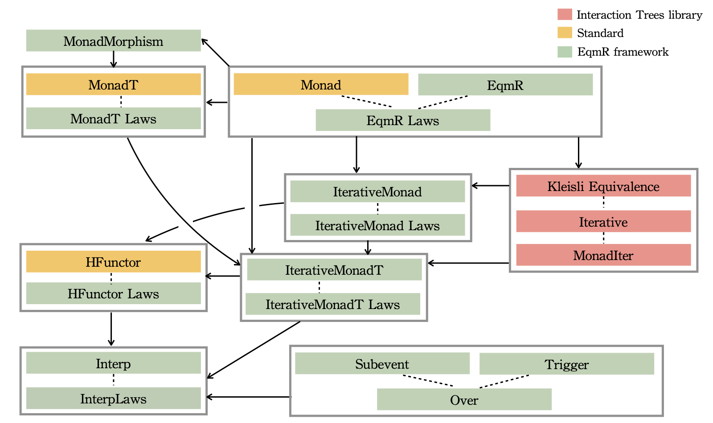

Formal Reasoning About Layered Monadic Interpreters
Our paper extends the Coq
Interaction Trees library
to support elegant reasoning about layered monadic interpreters.
This artifact contains the corresponding formalism, and the case study of an Imp2Asm compiler.
Documentation
This documentation includes pretty-printed Coq source, which can also be found as
.v files
in the git repository. The pretty-printed html hides proof scripts by default, so you can click on
Show Proofs
at the top of the page to display all proofs.
Proof Structure
This artifact builds on top of the Interaction Tree library, and this artifact includes the original ITree library along with the relevant extension
which is the contribution of the paper.
The Coq contribution of this artifact is outlined in these following files.
N.B. There are other files included in the table of contents and the artifact submission which are part of the original ITree library.
Basics
Core
- Subevent.v:
Defines extensible subevents with automatic injection.
Interp
EqmR
- EqmRMonad.v:
Defines eqmR well-formedness laws, eqmR monad laws and inversion laws.
- EqmRMonadH.v:
Defines eqmR relations over different monads.
- EqmRMonadT.v:
Defines lifting of eqmR relations over monad transformers.
- ITree_strong.v:
Proves eqmR-related laws for interaction trees with strong bisimulation.
- ITree_weak.v:
Proves eqmR-related laws for interaction trees with weak bisimulation.
- State.v:
Proves eqmR-related laws for state monad.
- Prop.v:
Proves eqmR-related laws for prop monad.
- StateT.v:
Proves eqmR-related laws for state monad transformer.
- Error.v:
Proves eqmR-related laws for error monad.
- ErrorT.v:
Proves eqmR-related laws for error monad transformer.
- ID.v:
Proves eqmR-related laws for identity monad.
Paper Correspondence
Below is a table that shows how the definition of laws and their instances correspond to the Coq mechanization.
Paper
|
Coq Proof
|
| Item |
Description |
Subitems |
File |
Name |
Section 3.1, 3.2
|
Building Layered Monadic Interpreters
|
Trigger |
Subevent.v |
Class Trigger |
Subevent
|
Class Subevent |
Subevent Instances
|
Section Subevent_Instances |
Section 3.4
|
Interpretable monads
|
Interp |
Interp.v |
Class Interp |
HFunctor
|
HFunctor.v |
Class HFunctor |
stack_interp
|
InterpFacts.v |
Instance stack_interp |
Figure 7
|
Well-formedness Laws of EqmR
|
|
EqmRMonad.v |
Class EqmR_OK |
Section 4.2
|
Image of a Monadic Computation
|
|
EqmRMonad.v |
Definition image |
Figure 8
|
EqmRMonad Laws
|
|
EqmRMonad.v |
Class EqmRMonadLaws |
Figure 9
|
EqmRMonadInverses Laws
|
|
EqmRMonad.v |
Class EqmRMonadInversionProperties |
Section 4.1-4.3
|
ID Monad Instance for EqmR
|
|
ID.v |
|
Section 4.1-4.3
|
State Monad Instance for EqmR Laws
|
|
State.v |
|
Section 4.1-4.3
|
State Monad Instance for EqmR Laws
|
|
State.v |
|
Section 4.1-4.3
|
Error Monad Instance for EqmR Laws
|
|
Error.v |
|
Section 4.1-4.3
|
ITree Monad Instance for EqmR Laws (strong bisimulation)
|
|
ITree_strong.v |
|
Section 4.1-4.3
|
ITree Monad Instance for EqmR Laws (weak bisimulation)
|
|
ITree_weak.v |
|
Section 4.1-4.3
|
Prop Monad Instance for EqmR Laws
|
|
Prop.v |
|
Figure 10
|
Monad morphism laws
|
|
EqmRMonadT.v |
Section MonadMorphism |
Figure 11
|
Monad transformer well-formedness conditions
|
|
EqmRMonadT.v |
Class MonadTLaws |
Section 4.4
|
StateT Monad Transformer Law Instance
|
|
StateT.v |
|
Section 4.4
|
ErrorT Monad Transformer Law Instance
|
|
ErrorT.v |
|
Section 4.5
|
Relating Computation across Distinct Monads
|
|
EqmRMonadH.v |
|
Figure 12
|
Interpretation laws
|
|
InterpFacts.v |
|
Figure 13
|
Higher-order functor laws
|
|
HFunctor.v |
|
Figure 14
|
Composable Structures and Laws
|
MonadT Laws |
EqmRMonadT.v |
compose_MonadT |
IterativeMonadT
|
compose_IterativeMonadT |
IterativeMonadT Laws
|
compose_WF_IterativeMonadT |
HFunctor
|
HFunctor.v |
compose_HFunctor | /
HFunctor Laws
|
compose_WF_HFunctor |
Case Study
The case study in Section 6 is in tutorial/, where the definition of languages are in Imp.v and Asm.v, and the proof
of correctness for the compiler is in Imp2AsmCorrectness.v. The commuted version of this proof mentioned in Section 6.2.3
is in tutorial_commute/. The custom tactics mentioned is in tutorial/Proofmode.v.
Typeclass dependencies

Typeclass dependency in EqmR Framework is shown above. The red nodes are the category theory-relevant typeclasses from the Interaction Trees library (most notably the theory of iterative monads and
equivalence on Kleisli arrows), the yellow nodes are standard functional programming typeclasses (functor, monad, monad transformers, higher-order functors), and the green nodes
represent the structural properties that we have formalized in the framework. A dotted line connects an "operational" typeclass to its corresponding laws, and solid arrows represent dependencies.